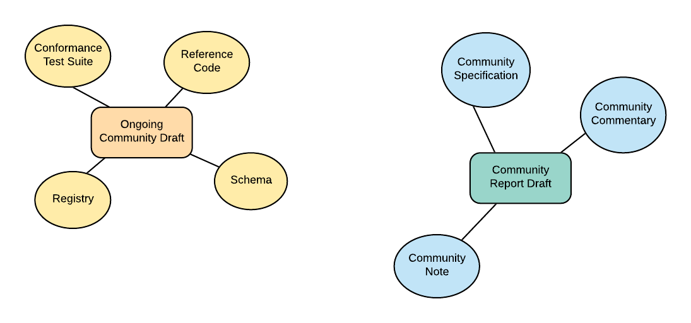
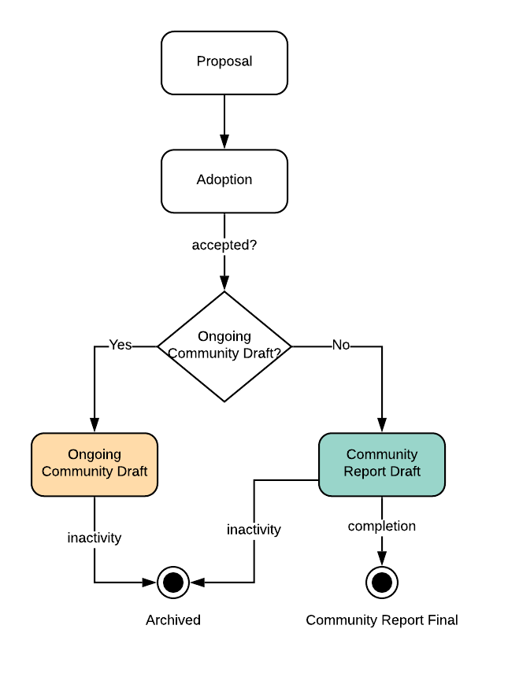
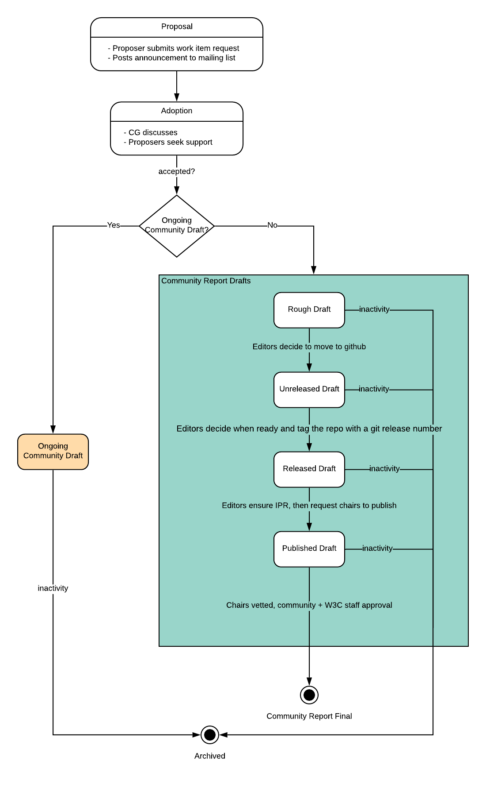

1. Introduction
To streamline and clarify how the W3C Credentials Community Group operates, this document outlines the process by which a CCG work item is created, managed, and finalized by the group.2. Terminology
community report: A category of CCG work item whose target deliverable is a collaborative document, with the goal of being completed and published by the CCG as a final report on [W3C-CCG-PAGE]. A community report must not suggest it is a standard or on the W3C standard track.
ongoing community draft — A category of CCG work item with a ccg repository that will be maintained by the CCG in perpetuity. It is not intended to beome a final report. Examples include registries, conformance tests, schemas, reference code, etc.
task force — A category of CCG work item that meets on a regular basis to address a specific topic within the scope of the CCG. It is not intended to beome a final report and may be concluded at any time by the participants. Examples include the VC-EDU task force, Secure Data Storage task force and DID Resolution task force. From time to time, task forces will provide updates to the main CCG community.
community specification: A type of community report, with intended transition to becoming a standard track working group [W3C-CANDIDATE-REC]
community note: A type of community report, with intended transition to becoming a [W3C-WG-NOTE]
community commentary: A type of community report not intended to transition to a [W3C-WG].
rough draft: A stage of a community report work item that is not yet available in a ccg repository, but is being iterated on via whatever medium or format the editors favor, e.g., Google Docs, Github, etc
unreleased draft: A stage of a community report work item that exists as a ccg repository but which is not yet a released draft
released draft: A stage of a community report work item that is tagged with a git release number but not published to W3C.
published draft: A stage of community report work item in which CCG chairs have approved a released draft and published it on the [W3C-CCG-PAGE]
final report: A stage of community report work item in which a published draft has been approved by the CCG community and the W3C staff, and is considered accepted as a [CG-FINAL-REPORT].
conformance test suite: A type of ongoing community draft, with the goal as being a companion to a community specification for testing of conformance.
registry: A type of ongoing community draft, with the goal of providing an informative, long-lived list (such as credential status methods, DID methods, Linked Data Key Types)
schema: A type of ongoing community draft, with the goal of providing reference schemas, such as JSON-LD contexts or JSON schemas.
experimental implementation: A type of ongoing community draft, with the goal of providing an example implementation of a community specification.
work item: An effort that is adopted by the CCG for further development and refinement. The process for CCG work items is described in this document.
release tag: A git concept for "freezing" a git artifact.
ccg repository , for iteration by CCG members through discussion, issues, and pull requests,
proposal: The initial stage of a CCG work item in which the CCG member announces their intention. adoption: The stage after proposal in which the CCG community discusses the proposed work item draft: The stage after a CCG work item has been accepted final: The final success stage of CCG work item. This only applies to community report work items, and not ongoing community drafts. archived: A stage of CCG work item which has been retired by the Chairs due to inactivity
stage: Refers to a phase of a CCG work item within the overall lifecycle
category: A course classification of CCG work items
type: A finer classification of CCG work items
target deliverable: The desired output or outcome of a CCG work item, which corresponds to CCG’s work item classifications
2.1. Work Item Requirements
2.1.1. W3C Requirements
As per [W3C-CG-GUIDELNES], W3C Community Groups (CGs) are established for communities of stakeholders to socialize their ideas for possible future standardization. CGs can publish documents with relatively minimal process and requirements other than that contributors agree to the [W3C-CLA].
The CCG manages a large number of work items, and in the course of its work, has developed conventions and tools to help streamline the process for its members, as well as guidelines and requirements to enable the chairs to manage the group more effectively. This document is designed to conform to W3C’s [CG-PROCESS] and [CG-REQUIREMENTS], which are the ultimate requirements for a W3C community group.
Group members may propose a different process for their work item, which the chairs may choose to accept (on a case-by-case basis) as long as the W3C’s [CG-PROCESS] and [CG-REQUIREMENTS] are met.
NOTE: Long term these may be replaced by new W3C processes, but currently as Working Groups currently terminate, until a new process for these is created by the W3C we maintain them as community groups are perpetual.
2.1.2. Additional CCG Requirements
The CCG has additional requirements in order to adopt a work item:-
at least one group member willing to commit to being the first editor
-
another group member (from a different company) willing to be a co-editor
-
a suggested timeline
-
a link to the W3C Code of Ethics and Professional Conduct
2.1.3. Work Item Scope
In general, any work that advances the [CCG-MISSION] is welcome for consideration as a work item.2.1.4. Work Item Questions
Each proposed work item must answer the following questions in their proposal. These questions are based on the Heilmeir Catechism. The intention is to improve clarity and understanding of the proposed work item.-
Explain what you are trying to do using no jargon or acronyms.
-
How is it done today, and what are the limits of the current practice?
-
What is new in your approach and why do you think it will be successful?
-
How are you involving participants from multiple skill sets and global locations in this work item? (Skill sets: technical, design, product, marketing, anthropological, and UX. Global locations: the Americas, APAC, Europe, Middle East.)
-
What actions are you taking to make this work item accessible to a non-technical audience?
2.1.5. Work Item Best Practices
While not a requirement, the following best practices are recommended-
peer leadership. Inspired from peer programming, peer leadership is teaming less experience work item owners with experienced work item owners for hands on experience. This enables knowledge transfer and empowers a larger number of future work item owners.
2.2. Work Item / Target Deliverable Classification
2.2.1. Categories
CCG classifies its work items by the target deliverable. The first relevant classification is a target deliverable category; the CCG distinguishes between three:
The ongoing community draft category is not common in the W3C, but has emerged as a useful concept in the CCG to cover ongoing work items that are useful to the community, while not being intended to turn into a final report
The task force category is not common in the W3C, but has emerged as a useful activity in the CCG to discuss topics of importance to the community. Task forces must have
-
at least one leader
-
completed requirements for a work item
For a task force to remain active, it must
-
provide a status update report within a timely manner of the chairs' request (meeting minutes will typically suffice)
If a response is not rendered within two weeks of the chairs' request, then the chairs may deem the task force to be inactive.
2.2.2. Types
These categories are further broken down into the following target deliverable types:
-
community report: There are three kinds of community report, each of which has the goal of transitioning to a final report, as follows:
-
ongoing community draft: This is not a strict or exhaustive list, just groupings that the CCG has found useful:
Figure: Types of Work Items 
2.3. Work Item Lifecycle
A CCG work item's lifecycle differs depending on its category:
Figure: Work Item Process Overview 
The lifecycle stages are:
2.3.1. Proposal Stage
A more concise version of this information is made available at [CCG-PROPOSE-WORK-ITEM].
A CCG member initiates a proposal by creating a [CCG-GITHUB-ISSUES] with the “New Work Item” template. The template prompts for the following proposal elements:
-
Abstract or Draft of proposed work item (typically a link to a google doc or a markdown page in Github)
-
Editors responsible for advancing the work item. Initially, a proposal may have a single editor; however, before approval of a work item it must have more than one editor, and editors must include representation from at least two companies.
-
Work item questions
Once the proposal github issue exists, the member should post the announcement to the CCG mailing list Credentials Community Group <[public-credentials@w3.org](mailto:public-credentials@w3.org)>, linking to the Github issue.
2.3.2. Adoption Stage
Once a proposal is announced, the community group will discuss it for a period of at least one week. This discussion may take place on the mailing list and the regular conference call at the Chairs discretion. During this time, proposers should seek support and consensus around their specific proposal.
Once there has been suitable opportunity for conversation, the chairs will make a determination as follows: if the chairs decide the work item is appropriate, has sufficient community support, and there are no principled objections, the chairs will formally accept the work item.
2.3.3. Draft Stage
Once approved, the Chairs will facilitate creation of a ccg repository, as described in [CCG-CREATE-REPO]. . The editors will facilitate CCG progress on the work item per W3C practices including transparency and public documentation of meetings discussing the work item. To manage the intellectual property of contributions, editors should track work item contributors in the drafts.
2.3.4. Final Stage
A work item that succeeds in becoming a final report is closed. Details for this follow in § 2.4.1 Community Report Stages. The existing ccg repository description will be noted as being “FINAL:”.
ongoing community drafts are not eligible to enter this stage.
2.3.5. Archived Stage
If the chairs determine that progress on a work item is not progressing satisfactorily, they will notify the editors that they have one month to demonstrate progress. After this notice it is at the chairs discretion to keep the work item in the CCG roadmap, change the editors for the work item, or remove the work item from the CCG roadmap and formally close the work item, and the existing ccg repository description will be noted as being “CLOSED:”Applies here and in following sections. The convention of marking stage by the repository description prefix may not be the best way; should we use tags instead?
2.4. Work Item Stages, by Category
This section provides more detail to work item stages, depending on the work item category
Figure: Work Item Process Detail 
2.4.1. Community Report Stages
2.4.1.1. Rough Draft Stage
-
An initial rough draft should be started by the work item proposed editors as part of the process of proposing a community report work item.
-
Contributions to the rough draft by CCG members are moderated in a manner suitable to the medium, under the guidance of the work item editors.
-
work item editors must ensure that all substantial commitments to the rough draft are made by members that have signed the CCGs Contributors Agreement.
-
Editors may iterate a rough draft work item at their initial location until they are ready, but the goal should be to transition them to a ccg repository in an acceptable format (details in § 2.4.1.2 Unreleased Draft Stage) as soon as reasonably possible.
2.4.1.2. Unreleased Draft Stage
-
When the editors of a rough draft work item agree that a version of a rough draft is ready for Github, and it has been formatted in ReSpec format (or appropriate format for destination such as IETF draft format), they may migrate to the ccg repository that has been created for them.
-
Issues & pull requests to the unreleased draft are moderated by the work item editors, as per W3C github cultural practices, including transparency and public documentation of work item meetings.
2.4.1.3. Releeased Draft Stage
-
When the editors of a work item believe that the collaboration has reached some milestone (say for broader commentary by other CCG members or to the broader community), at their discretion they may mark a particular version of the ccg repository with a release tag. If the work item itself contains a version number (e.g. in its specification text), then that version must be increased with the commit following the release tag; work then continues on that next version.
-
Release numbering must follow [SEMVER]. Work items that are WG Specifications or WG Notes track (for future transitions to the standards-track W3C Working Group Process) must be numbered below 1.0.0. Alternatively, drafts destined for non-W3C standards track may use the appropriate numbering system for the intended standards organization.
-
Editors should submit a PR to [CCG-WORK-ITEMS] to update the work item stage and version number.
-
The editors may continue to update with new releases numbers as needed.
2.4.1.4. Published Draft Stage
-
Prior to publishing, the Editors must verify that all substantive contributors to the released draft have signed the CCGs Contributors' Agreement, and request that the chairs publish the draft to the W3C.
-
The chairs determine when a released draft is ready to listed as a published draft on the [W3C-CCG-PAGE].
2.4.1.5. Final Report Stage
-
When a community report is final, and work on that version is complete or a hand-off to a WG is imminent, the work item editors finalize any IPR commitments.
-
The chairs review the published draft for consideration as a final report and post the proposal to become a final report an email to the CCG discussion list for approval.
-
Once proposed, the community group will discuss it for a period of at least one week. This discussion may take place on the mailing list as well as on the regular conference call at the Chairs discretion.
-
If there is sufficient community support for the published draft and there are no principled objections, the chairs at their discretion will submit the published draft to the W3C staff as a final report.
-
W3C Staff have final approval for all final report listed in the [W3C-CCG-PAGE].
-
If accepted by the W3C staff, the ccg repository description will be changed to “FINAL REPORT:” and the work item is now closed.
2.4.2. Ongoing community draft stages
Propose a CG work item with the intent to make it an ongoing community draft (such as a CG Registry). The proposal would pass per the CG’s documented consensus process.
W3C leadership may propose a ongoing community draft process, in which case this would be revised to include that.
Any normative registry work items should be chartered by a W3C working group and shall be run according to that charter. Charter should include plans for releasing snapshots of the work item.